Yogyakarta
Sebuah perjalanan mendalam menuju kosmologi, tradisi, dan dialektika sosial di jantung peradaban Jawa yang masih hidup hingga hari ini.
Mulai Eksplorasi ↓Dari batik larangan hingga wayang kulit, setiap elemen budaya Yogyakarta menyimpan filosofi mendalam tentang kehidupan manusia.
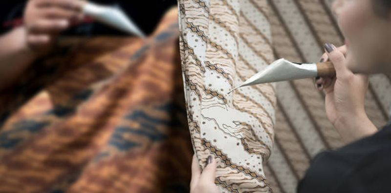
Seni TradisionalSultan Hamengkubuwono I menetapkan motif Parang Rusak sebagai motif larangan pertama pada 1785. Batik Yogyakarta bukan sekadar kain—ia adalah simbol status, tanggung jawab moral, dan regulasi sosial yang mengatur hierarki kepemimpinan keraton. Batik gagrak Jogja memiliki dasar berwarna putih atau krem dengan motif yang besar dan tegas—berbeda kontras dengan gaya Solo yang lebih halus dan rumit.
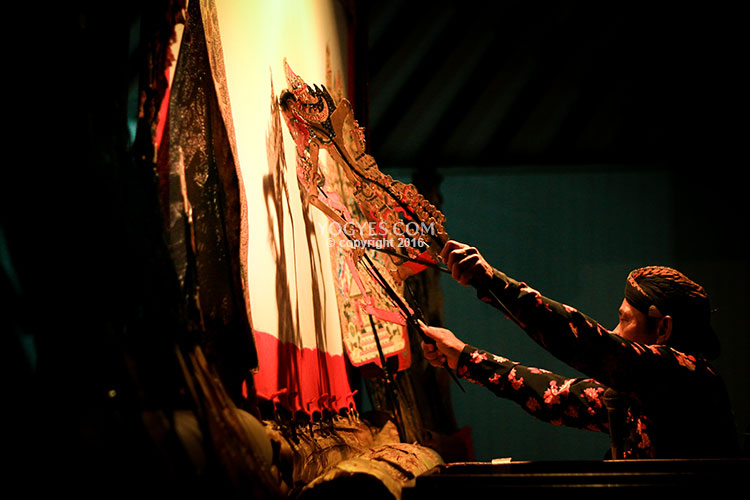
Seni PertunjukanWayang Jogja memiliki postur kekar, bahu lebar, dan wajah menunduk—melambangkan karakter kokoh dan andhap asor (rendah hati). Iringan keprak kayu dan besi menghasilkan nuansa dinamis dan dramatis yang khas. Cerita mengacu pada Serat Purwakandha (Sultan HB V), berbeda dari Solo yang merujuk Serat Pustakaraja karya Ranggawarsita.
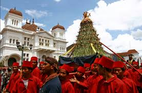
Ritus KerajaanUpacara Sekaten dimulai dengan prosesi Miyos Gangsa—keluarnya gamelan pusaka Kanjeng Kiai Gunturmadu dan Nagawilaga ke Masjid Gedhe Kauman selama 7 hari. Istilah Sekaten dikaitkan dengan Syahadatain (dua kalimat syahadat). Puncaknya, Grebeg Mulud, Sultan memberikan Gunungan kepada rakyat melalui prosesi ngalap berkah.
Tata ruang kota Yogyakarta adalah perwujudan simbolis dari ajaran Sangkan Paraning Dumadi — asal-usul dan tujuan akhir hidup manusia.
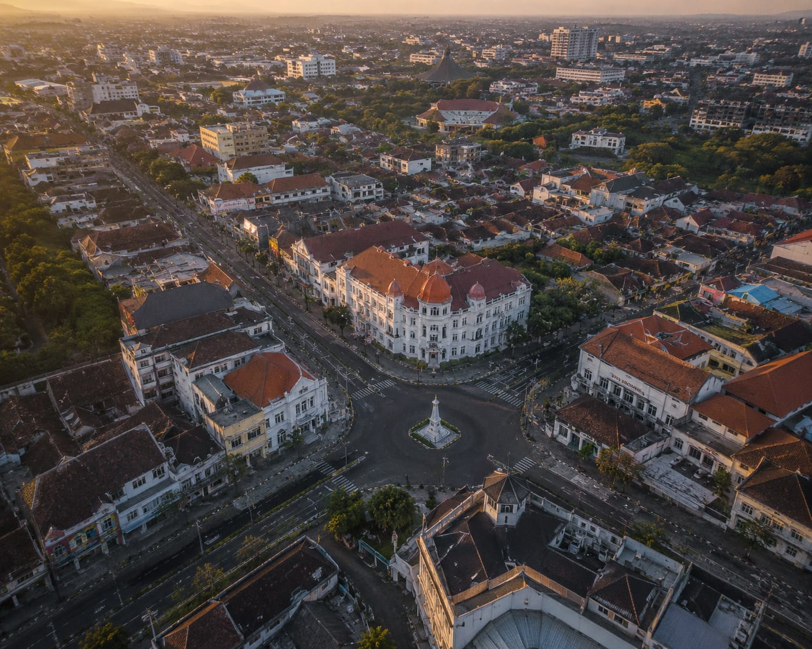
Sultan Hamengkubuwono I mendesain Yogyakarta sebagai perwujudan simbolis dari ajaran Sangkan Paraning Dumadi—filosofi tentang asal-usul dan tujuan akhir hidup manusia. Garis lurus dari Panggung Krapyak, Keraton, hingga Tugu Pal Putih merepresentasikan perjalanan batin manusia.
Secara kosmologis, poros ini diperluas menghubungkan Laut Selatan (Samudra Hindia) di ujung selatan dan Gunung Merapi di ujung utara—menciptakan keseimbangan antara unsur air dan api, feminin dan maskulin, serta bumi dan langit.
Pengakuan UNESCO pada September 2023 menegaskan signifikansi universal kearifan lokal ini. Konsep tata ruang ini tidak ditemukan di daerah lain dengan kedalaman makna serupa, menjadikannya identitas spasial paling mencolok dari Yogyakarta.
Hamemayu Hayuning Bawono — Memperindah dunia melalui tindakan nyata yang berlandaskan kasih sayang dan kearifan.
Tahta untuk Rakyat — Kekuasaan keraton adalah amanah untuk melindungi dan memajukan masyarakat, bukan hak istimewa kemewahan pribadi.
Interaksi sosial di Yogyakarta terbagi menjadi dua bentuk utama: Asosiatif yang menyatukan dan Disosiatif yang merenggangkan — keduanya membentuk lanskap sosial kota ini.
Interaksi yang mengarah pada persatuan, kerja sama, dan penguatan ikatan sosial masyarakat Yogyakarta.
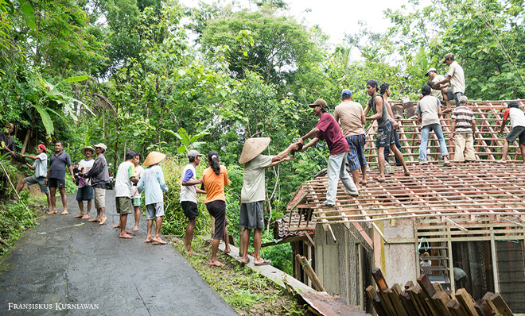
Bentuk kerja sama yang paling khas di Yogyakarta adalah tradisi "Sambatan" atau "Gugur Gunung". Di desa-desa daerah Bantul atau Gunungkidul, warga akan berkumpul secara sukarela untuk membantu tetangga yang sedang membangun rumah atau memperbaiki jalan tanpa dibayar sepeser pun.
Tradisi ini menunjukkan bahwa solidaritas sosial di Yogyakarta bukan sekadar konsep, melainkan praktik nyata yang masih hidup hingga hari ini. Nilai gotong royong menjadi fondasi utama kehidupan bermasyarakat di pedesaan maupun perkampungan kota.
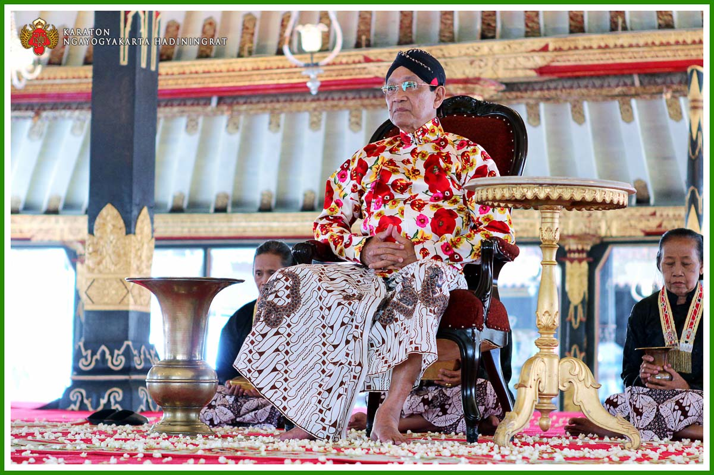
Akomodasi adalah usaha untuk meredakan pertentangan dalam masyarakat. Di Yogyakarta, peran Keraton Yogyakarta dan tokoh masyarakat sangat penting dalam memediasi konflik.
Contoh nyata: mediasi konflik antara pengemudi ojek online dan ojek pangkalan di area wisata. Melalui musyawarah yang difasilitasi tokoh setempat, tercipta kesepakatan zona jemput yang damai — menunjukkan bahwa tradisi musyawarah mufakat masih menjadi mekanisme resolusi konflik utama di Yogyakarta.
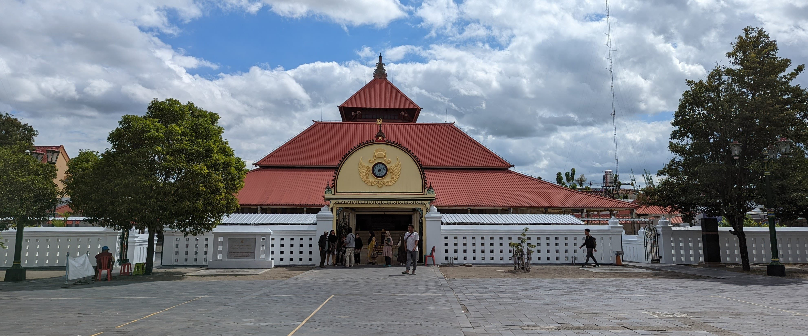
Akulturasi adalah perpaduan budaya tanpa menghilangkan identitas aslinya. Contoh paling khas adalah Masjid Gede Kauman — secara fungsi merupakan tempat ibadah Islam, namun arsitekturnya sangat kental dengan gaya Joglo Jawa dan ornamen Keraton.
Dalam dunia kuliner, Bakpia Pathok merupakan perpaduan sempurna antara pengaruh Tiongkok dengan cita rasa manis khas Jawa. Nama "Pathok" sendiri berasal dari Kampung Pathuk tempat komunitas Tionghoa pertama kali mengembangkan kue ini, yang kemudian diadaptasi dengan isian dan rasa lokal.
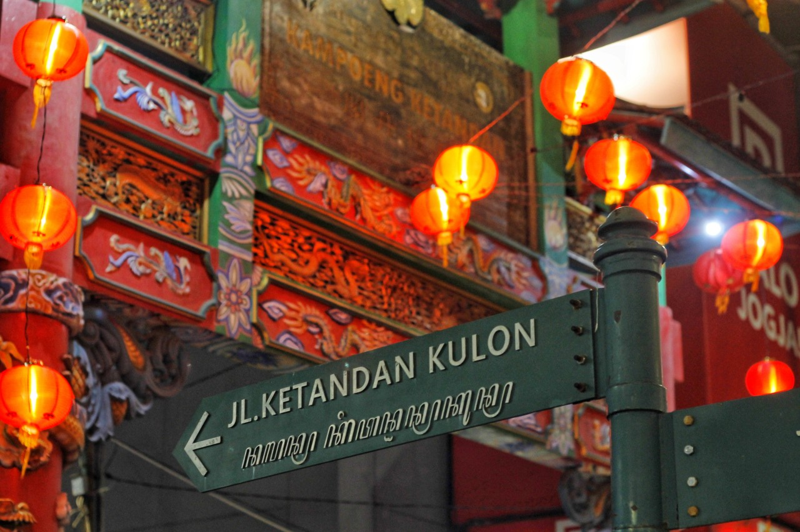
Asimilasi adalah percampuran budaya yang membentuk identitas baru. Contoh nyata dapat dilihat pada kehidupan di Kampung Ketandan.
Etnis Tionghoa di Yogyakarta : Banyak warga keturunan Tionghoa di Jogja yang sudah tidak bisa lagi berbahasa Mandarin, menggunakan nama Jawa, berpakaian batik sehari-hari, dan menjalankan tradisi yang sepenuhnya "Jawa banget". Dalam sosiologi, ini adalah contoh asimilasi total di mana identitas budaya leluhur sudah melebur dengan budaya lokal.
Interaksi yang mengarah pada perpecahan, persaingan, atau konflik — sisi lain dari dinamika sosial kota.
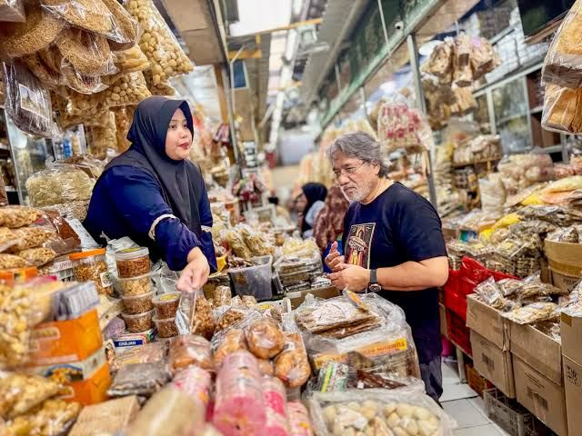
Persaingan usaha merupakan bentuk interaksi disosiatif yang paling umum di Yogyakarta. Contoh nyata terlihat pada persaingan antar toko oleh-oleh di sepanjang Jalan Solo atau Jalan Bakpia Pathok.
Para pedagang saling bersaing memberikan layanan, harga, dan varian rasa terbaik untuk menarik wisatawan. Meskipun bersifat kompetitif, persaingan ini justru mendorong inovasi dan peningkatan kualitas produk yang menguntungkan konsumen.
Kontravensi adalah sikap tersembunyi yang menunjukkan rasa tidak suka atau keraguan terhadap suatu hal. Di Yogyakarta, fenomena ini sering muncul dalam isu pembangunan.
Contoh nyata: munculnya spanduk-spanduk berisi penolakan warga terhadap pembangunan hotel atau apartemen yang dianggap mengancam ketersediaan air tanah di kampung mereka. Bentuk protes pasif ini menunjukkan bahwa masyarakat Yogyakarta lebih memilih menyuarakan aspirasi secara simbolis sebelum melakukan aksi langsung.
.jpg)
Konflik adalah pertentangan terbuka yang disertai ancaman atau kekerasan. Meskipun Yogyakarta dikenal sebagai kota yang damai, dinamika konflik tetap ada.
Contoh nyata: gesekan antar oknum suporter sepak bola atau aksi tawuran antar kelompok remaja yang biasa disebut "klitih" — tindak kekerasan jalanan yang mengganggu ketertiban umum. Fenomena ini menjadi perhatian serius pemerintah dan masyarakat, memicu berbagai program pencegahan melalui pendekatan budaya dan pendidikan karakter.
| Jenis | Bentuk Interaksi | Contoh di Yogyakarta |
|---|---|---|
| Asosiatif | Kerja Sama | Tradisi Sambatan/Gugur Gunung di Bantul & Gunungkidul |
| Asosiatif | Akomodasi | Mediasi konflik ojek online vs ojek pangkalan oleh tokoh masyarakat |
| Asosiatif | Akulturasi | Masjid Gede Kauman (Islam + Joglo Jawa) & Bakpia Pathok |
| Asosiatif | Asimilasi | Identitas "Tionghoa-Jogja" di Kampung Ketandan |
| Disosiatif | Persaingan | Kompetisi toko oleh-oleh di Jalan Bakpia Pathok |
| Disosiatif | Kontravensi | Spanduk penolakan pembangunan hotel oleh warga |
| Disosiatif | Konflik | Fenomena klitih & gesekan suporter sepak bola |
Dari tradisi Masangin hingga Jimpitan, kearifan lokal Yogyakarta membuktikan bahwa modal sosial non-ekonomis mampu menjawab kompleksitas perkotaan.
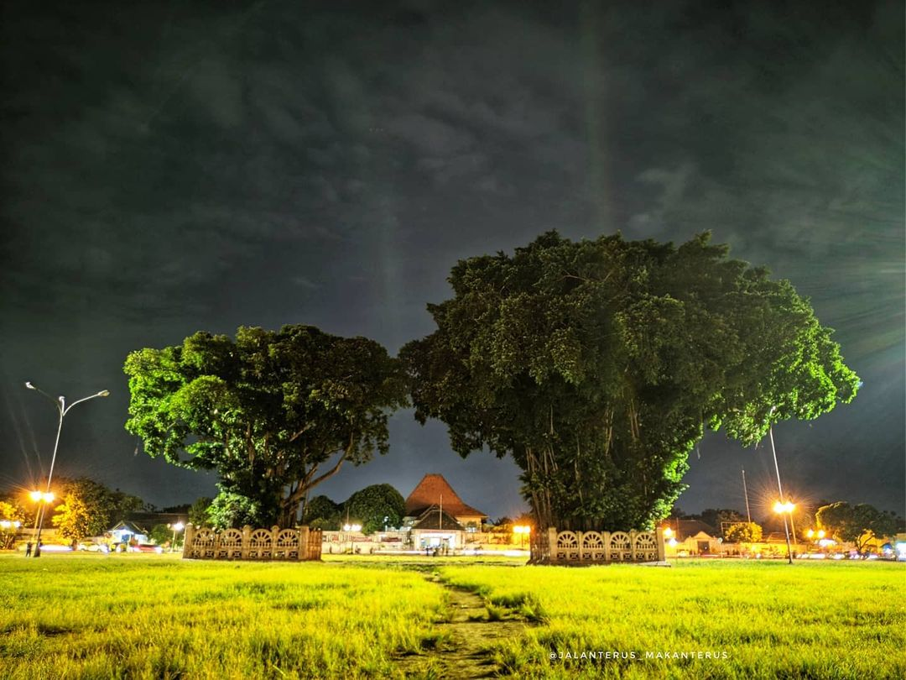
Berjalan dengan mata tertutup di antara dua pohon beringin kembar di Alun-Alun Kidul. Keberhasilan melewatinya diyakini berkaitan dengan kebersihan hati dan kejernihan niat. Pohon beringin melambangkan pengayoman dan keadilan.
Alun-Alun Selatan telah bertransformasi menjadi pusat kuliner dan hiburan rakyat — ruang tradisional yang beradaptasi dengan kebutuhan rekreasi modern tanpa kehilangan nilai sejarahnya.
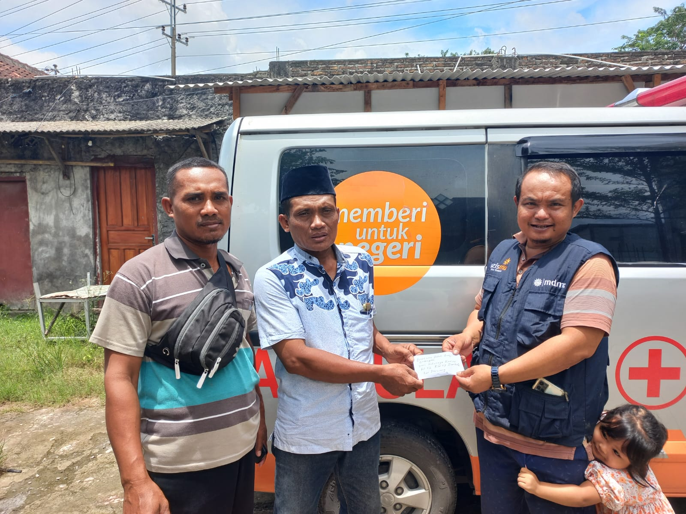
Jimpitan adalah sumbangan sukarela berupa beras sejimpit atau uang logam kecil saat ronda malam. Dana terkumpul untuk pembangunan sarana, jaminan sosial informal, simpan pinjam, hingga piknik tahunan warga.
Kegiatan ini melahirkan rasa guyub, gotong royong, dan kepercayaan antarwarga yang menjadi fondasi ketahanan komunitas menghadapi tekanan urbanisasi.
| Hari | Jenis Pagelaran | Makna Sosiologis |
|---|---|---|
| Selasa | Karawitan | Membangun harmoni kolektif melalui musik |
| Rabu | Wayang Golek | Edukasi moral melalui narasi tradisional |
| Kamis | Wayang Kulit | Refleksi filosofis tentang kehidupan |
| Jumat | Tembang & Aksara Jawa | Penguatan literasi dan jati diri budaya |
| Sabtu | Wayang Orang | Kerjasama tim dalam ekspresi estetika |
| Minggu | Latihan Tari (Beksan) | Disiplin fisik dan pelestarian standar seni |
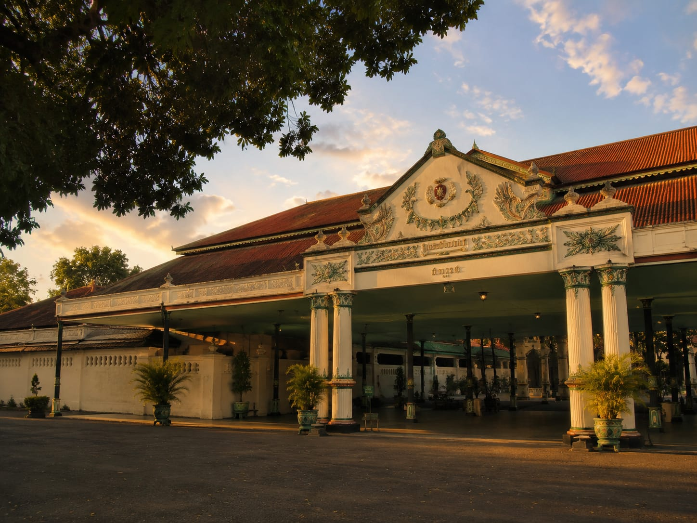
Keraton Yogyakarta bukan hanya tempat tinggal Sultan, melainkan pusat kebudayaan yang memancarkan nilai harmoni dan keseimbangan. Melalui UU No. 13 Tahun 2012, Sultan Hamengkubuwono secara otomatis menjadi Gubernur DIY — satu-satunya legitimasi keturunan yang diakui konstitusional di Indonesia.
Filosofi "Tahta untuk Rakyat" menegaskan bahwa kekuasaan keraton adalah amanah untuk melindungi dan memajukan masyarakat, bukan hak istimewa kemewahan pribadi.
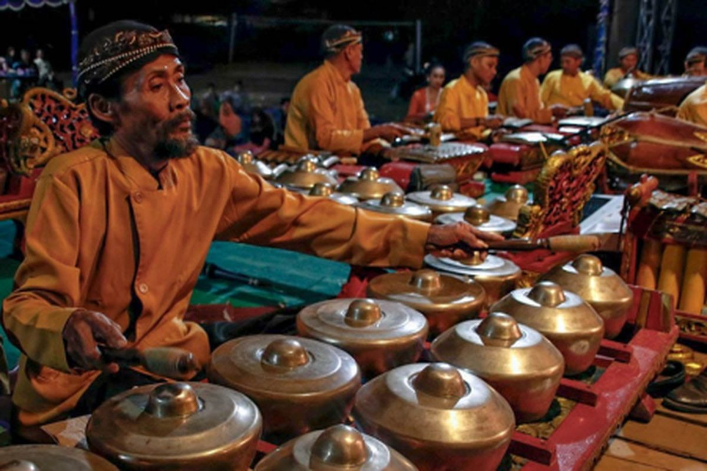
Gamelan gagrak Yogyakarta berukuran lebih besar dengan suara nyaring dan cerah, berbeda dari Solo yang lebih berat. Dua perangkat gamelan pusaka — Kanjeng Kiai Gunturmadu dan Kanjeng Kiai Nagawilaga — dibunyikan selama tujuh hari dalam upacara Sekaten.
Keraton menyelenggarakan pelatihan rutin tari, karawitan, dan aksara Jawa yang terbuka bagi masyarakat umum, mengajarkan nilai kesabaran, kepekaan, dan harmoni.
Batik Yogyakarta bukan sekadar kain—ia adalah alat regulasi sosial dan penguatan hierarki kepemimpinan keraton yang masih berlaku hingga hari ini.
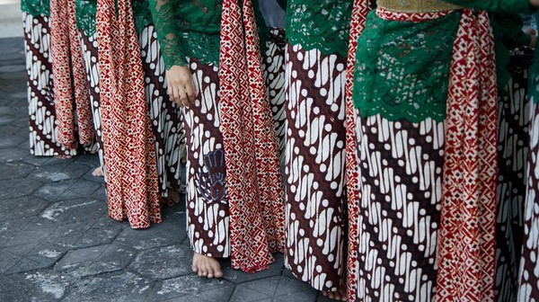
Sultan Hamengkubuwono I menetapkan motif Parang Rusak sebagai motif larangan pertama pada tahun 1785. Motif ini mengandung filosofi kepemimpinan yang berat—kemampuan mengendalikan nafsu pribadi seperti ombak laut yang menghantam karang tanpa merusaknya.
Aturan penggunaan sangat ketat dan diatur dalam pranatan resmi keraton. Motif Parang Rusak Barong dengan ukuran lebih dari 10 cm hanya diperuntukkan bagi Raja dan Putra Mahkota. Hingga saat ini, wisatawan yang berkunjung ke area inti keraton dilarang menggunakan motif parang tertentu sebagai bentuk penghormatan.
Selain Parang Rusak, terdapat motif Huk yang melambangkan kecerdasan dan kewibawaan, serta motif Kawung yang melambangkan kesucian batin. Di daerah lain batik mungkin telah menjadi komoditas fesyen massal, tetapi di Yogyakarta kain ini tetap menjadi simbol status dan tanggung jawab moral.
| Aspek | Gagrak Yogyakarta | Gagrak Surakarta |
|---|---|---|
| Gaya Arsitektur | Jawa-Hindu Klasik, simbolis, dominasi ornamen tradisional | Jawa-Eropa (Indische), penggunaan patung gaya Barat, lebih terbuka |
| Palet Warna | Putih, hijau tua, kuning emas melambangkan kemuliaan | Biru, putih, cokelat kayu dengan paduan emas dekoratif |
| Warna Dasar Batik | Putih atau krem (pethakan) | Cokelat sogan yang lebih dominan |
| Motif Batik | Cenderung besar, tegas, dan kontras | Lebih kecil, halus, dan rumit |
| Bentuk Wayang | Kekar, bahu lebar, wajah menunduk (andhap asor) | Ramping, jangkung, ekspresi wajah lebih tenang |
| Gamelan | Fisik lebih besar, suara lebih nyaring/cerah | Fisik lebih rapat, ornamen rumit, suara lebih berat |
| Iringan Wayang | Keprak kayu dan besi (bunyi nyaring) | Banyak lempeng besi (bunyi gemerincing) |
| Karakter Bangunan | Rendah, kokoh, fungsional secara ritual | Lebih tinggi dan berornamen rumit |
Di Yogyakarta, dimensi mistis tidak terpisah dari realitas sehari-hari, melainkan menjadi bagian integral dari identitas sosial masyarakat.
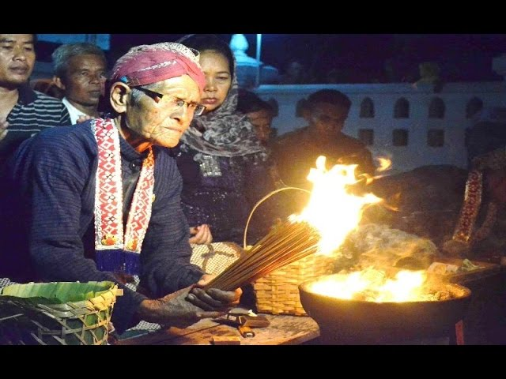
Kehidupan spiritual masyarakat Yogyakarta ditandai dengan penghormatan terhadap hari-hari tertentu, khususnya Selasa Kliwon dan Jumat Kliwon. Malam Selasa Kliwon dianggap keramat karena berkaitan dengan hari lahir Sultan atau peristiwa penting dalam sejarah keraton.
Pada hari-hari ini sering dilakukan Jamasan Pusaka—penyucian benda-benda warisan sejarah seperti keris, tombak, kereta, dan gamelan. Tradisi ini dilaksanakan setahun sekali pada bulan Sura (Muharram), dengan hari Selasa Kliwon sebagai prioritas karena diyakini sebagai hari turunnya wahyu keraton.
Bagi masyarakat umum, hari-hari ini digunakan untuk ritual pembersihan diri, ziarah, atau selamatan sebagai bentuk syukur dan permohonan keselamatan. Praktik ini menunjukkan bahwa tradisi mistis menjadi bagian nyata dari kehidupan sehari-hari di Yogyakarta.
Gunungan bukan sekadar tumpukan hasil bumi, melainkan simbol kemakmuran kerajaan yang dibagikan kepada rakyat melalui prosesi ngalap berkah.
| Jenis Gunungan | Makna & Simbolisme | Peruntukan |
|---|---|---|
| Gunungan Kakung | Berbentuk kerucut lancip, melambangkan pribadi Raja dan unsur maskulinitas | Rakyat umum (melalui Masjid Gedhe) |
| Gunungan Putri | Berbentuk lebih lebar dan tumpul, melambangkan Permaisuri dan feminitas | Rakyat umum (melalui Masjid Gedhe) |
| Gunungan Dharat | Melambangkan para Pangeran atau putra-putra raja | Dibawa ke Masjid Gedhe |
| Gunungan Gepak | Melambangkan para Putri raja | Dibawa ke Masjid Gedhe |
| Gunungan Pawuhan | Melambangkan para Cucu raja | Dibawa ke Masjid Gedhe |
| Gunungan Bromo | Hanya ada pada Tahun Dal (siklus 8 tahunan), sangat sakral dan berukuran besar | Keluarga internal keraton saja |
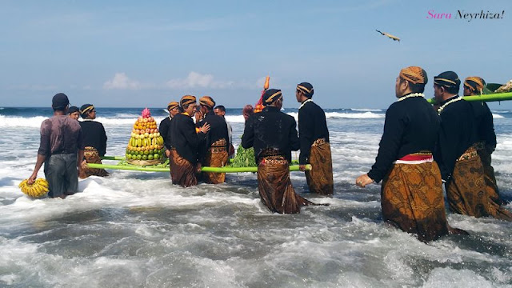
Labuhan dilakukan di empat titik kekuatan alam: Pantai Parangkusumo, Gunung Merapi, Gunung Lawu, dan Hutan Dlepih Khayangan. Upacara melibatkan pelarungan ubarampe berupa potongan kuku, rambut, dan pakaian bekas Sultan (lorodan ageman dalem).
Secara antropologis, Labuhan adalah mekanisme menjaga harmoni antara mikrokosmos (manusia/keraton) dengan makrokosmos (alam semesta). Di Parangkusumo, ritual merujuk pada legenda pertemuan Panembahan Senopati dengan Kanjeng Ratu Kidul. Di Gunung Merapi, upacara menghormati kekuatan vulkanik yang diyakini pernah menyelamatkan Mataram dari serangan musuh.
Satu-satunya daerah di Indonesia yang mempertahankan legitimasi kepemimpinan berbasis keturunan yang diakui secara konstitusional.
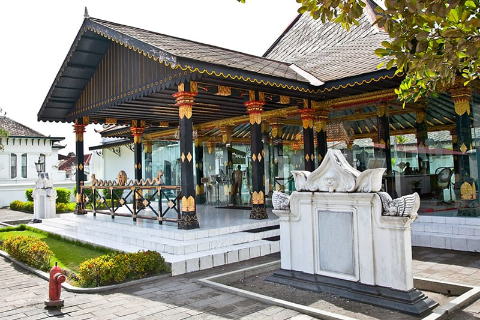
Melalui Undang-Undang Nomor 13 Tahun 2012 tentang Keistimewaan DIY, sistem pemerintahan Yogyakarta secara legal mengintegrasikan struktur monarki tradisional ke dalam kerangka administrasi Republik Indonesia. Jabatan Gubernur dan Wakil Gubernur DIY tidak dipilih melalui pemilu, melainkan ditetapkan secara otomatis kepada Sultan Hamengkubuwono dan Adipati Paku Alam yang bertahta.
Kepemimpinan Sultan dipandu filosofi Hamemayu Hayuning Bawono—komitmen menjaga keharmonisan dunia demi kesejahteraan rakyat. Falsafah ini diturunkan ke budaya birokrasi melalui semboyan SATRIYA, yang menekankan keteladanan, tanggung jawab, dan pelayanan publik berakar kearifan lokal.
Integrasi ini membuktikan bahwa nilai-nilai tradisional mampu memberikan fondasi stabil bagi pemerintahan modern, sekaligus menjadi benteng pertahanan identitas budaya di tengah arus globalisasi.
Klik foto untuk memperbesar — jelajahi keindahan budaya dan kehidupan sosial Yogyakarta.
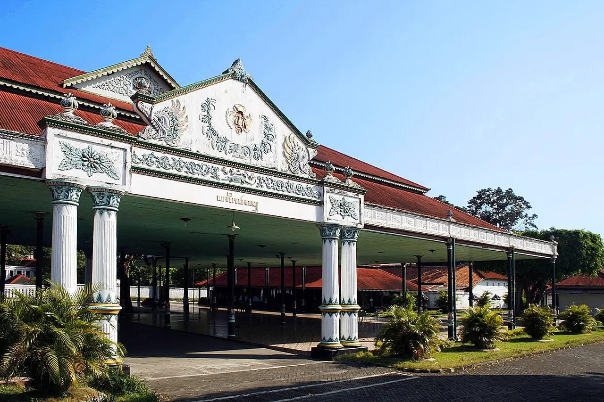
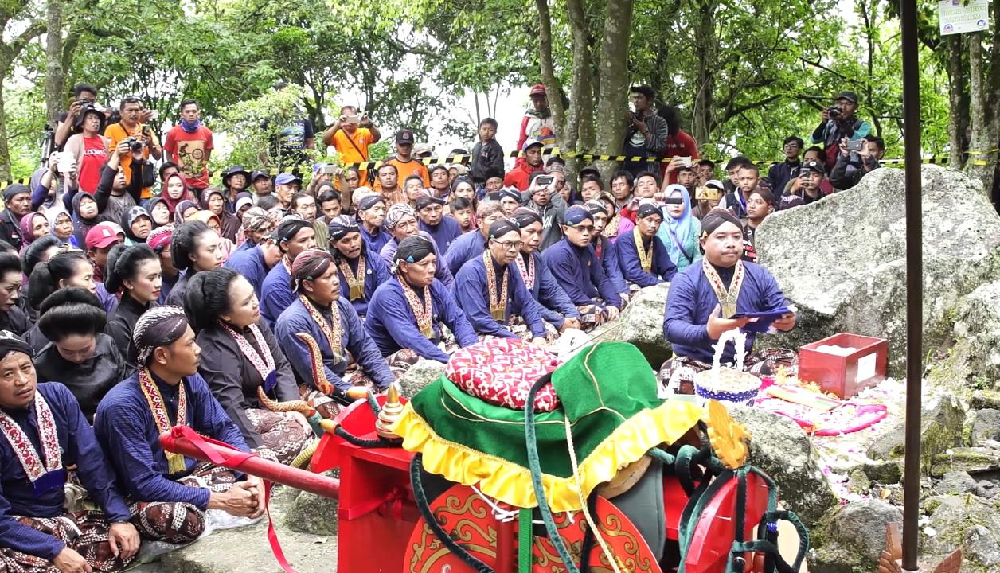
Ora srawung, rabimu suwung — Jika tidak bersosialisasi, pernikahanmu akan sepi tanpa dukungan.